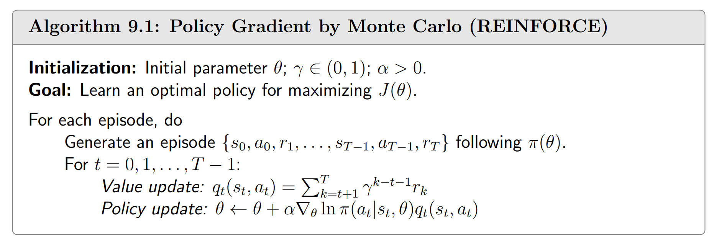
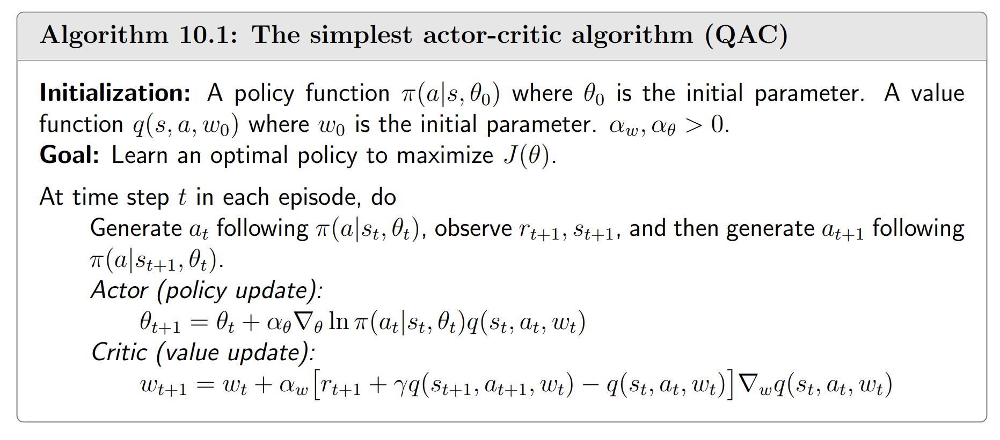
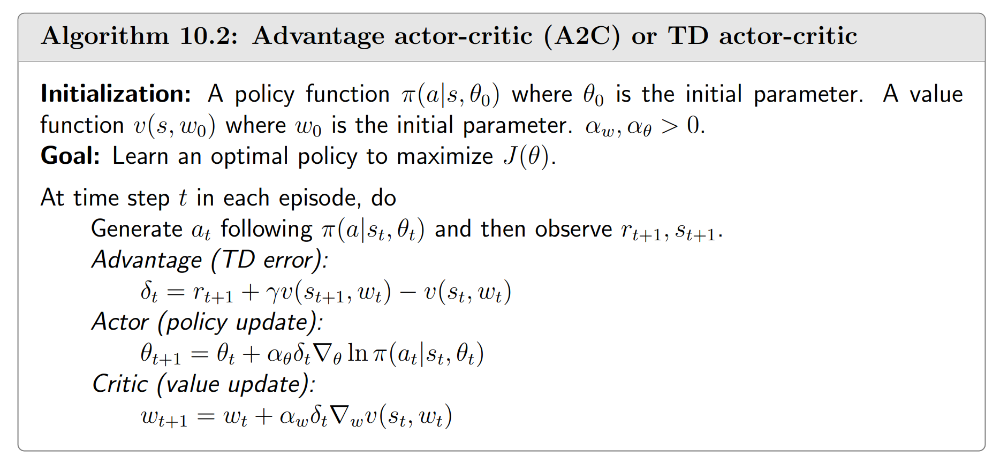

基本思想
在Policy Gradient（policy-based method）中，我们用一个目标函数 $J(\theta)$ 来衡量策略 $\pi(\theta)$ 的好坏，并直接对 $J(\theta)$ 做梯度上升来得到最优策略。（别问我梯度上升为什么能找到最大值！！！）
常见的衡量的方法有两种（实际上他们等价）：
-
衡量 $\bar v_\pi$ ：
$$ \bar{v}_\pi = \sum_{s \in S} d_\pi(s) v_\pi(s)=\mathbb{E}_{S \sim d_\pi}[v_\pi(S)] $$其中 $d_\pi$ 是稳态分布；$\bar v_\pi$ 也可以写成：
$$ \lim_{n \to \infty} \mathbb{E}\left[ \sum_{t=0}^{n-1} \gamma^{t}R_{t+1} \right] = \bar v_\pi $$这个式子不难证明，使用iterated expectation即可。
值得一提的是，有时候我们会遇到 $\bar v_\pi^0$，这表示
$$ \bar{v}_\pi^0 = \sum_{s \in S} d_0(s) v_\pi(s)=\mathbb{E}_{S \sim d_0}[v_\pi(S)] $$即状态分布 $d_0$ 和策略 $\pi$ 无关。
-
衡量 $\bar r_\pi$ ：
$$ \bar{r}_\pi = \sum_{s \in S} d_\pi(s) r_\pi(s) = \mathbb{E}_{S \sim d_\pi}[r_\pi(S)] $$其中 $d_\pi$ 是稳态分布；$\bar r_\pi$ 也可以写成：
$$ \lim_{n \to \infty} \frac{1}{n} \mathbb{E}\left[ \sum_{t=0}^{n-1} R_{t+1} \right] = \bar{r}_\pi. $$这个式子不好证明，TODO
-
$\bar v_\pi$ 和 $\bar r_\pi$ 实际上是等价的：
$$ \frac{1}{1-\gamma}\bar r_\pi = \bar v_\pi $$结合 bellman-equation $v_\pi = r_\pi + \gamma P_\pi v_\pi$ 以及 Markov chain 的性质 $d_\pi^TP_\pi = d_\pi^T$ 即可证明。
策略梯度定理
定理：Policy Gradient Theorem
$$ \begin{align*} \nabla J(\theta) &= \sum_{s \in S} \eta(s) \sum_{a \in A} \nabla_{\theta} \pi(a|s, \theta) q_{\pi}(s, a) \\ &= \mathbb{E}_{s \sim \eta, a \sim \pi(s)} \left[ \nabla_{\theta} \ln \pi(a|s, \theta) q_{\pi}(s, a) \right] \end{align*} $$其中 $\eta$ 为稳态分布。这里的 $J(\theta)$ 可能是 $\bar v_\pi^0$、$\bar v_\pi$、$\bar r_\pi$，他们可能是 discounted case 或 undiscounted case. 对不同的 $J(\theta)$ 和 discounted or undiscounted case，等号可能要换成约等于号。
这个定理的证明是困难的。TODO
算法实现
我们应当注意到，在计算梯度时，需要计算 $q_\pi(s,a)$. 这就要求我们对 $q_\pi$ 进行一个估计。
REINFORCE
最基础的policy gradient算法叫做 REINFORCE，它用蒙特卡洛方法来估计 $q_\pi$：

QAC
结合value function approximation的思想，注意到我们可以用TD来代替蒙特卡洛：

A2C
A2C也结合了value function approximation的思想，它也同样使用TD来估计 $q_\pi$. 这个算法基于以下事实：
$$ \begin{align*} &\mathbb{E}_{s \sim \eta, a \sim \pi(s)} \left[ \nabla_{\theta} \ln \pi(a|s, \theta) q_{\pi}(s, a) \right] \\ =&\mathbb{E}_{s \sim \eta, a \sim \pi(s)} \left[ \nabla_{\theta} \ln \pi(a|s, \theta) \bigg(q_{\pi}(s, a) - b(s)\bigg) \right] \end{align*} $$其中 $b$ 是任意的关于状态 $s$ 的函数。这个事实的证明并不困难，把期望写成求和形式即可。
在得知这个事实后，我们自然希望选取合适的函数 $b$，使得期望内部的随机变量的方差达到最小，因为方差越小，随机采样的结果就越接近期望（真实梯度）。然而使方差最小的 $b$ 满足下式：
$$ b^*(s) = \frac{\mathbb{E}_{A \sim \pi} \left[ \|\nabla_\theta \ln \pi(A|s, \theta_t)\|^2 q_\pi(s, A) \right]}{\mathbb{E}_{A \sim \pi} \left[ \|\nabla_\theta \ln \pi(A|s, \theta_t)\|^2 \right]}, \quad s \in S. $$你居然给了我这么长的式子，我发誓要用靴子狠狠地踢你的屁股！！！在实践中，我们经常简单地取 $b(s) = \mathbb E_{A \sim \pi}\left[q_\pi(s, A)\right] = v_\pi(s)$，这样的式子看起来就简洁多了。现在我们的梯度就是下式：
$$ \mathbb{E}_{s \sim \eta, a \sim \pi(s)} \left[ \nabla_{\theta} \ln \pi(a|s, \theta) \bigg(q_{\pi}(s, a) - v_\pi(s)\bigg) \right] $$这里的 $q_{\pi}(s, a) - v_\pi(s)$ 也被称作 advantage.
说了这么多理论，你知道A2C是怎样的了吗？如果不知道，先自己想一想。

在value update中，有时候我们也会看见有人直接用均方误差MSE来backward（参考下面的代码）， 这实际上和我们的方法是一样的。这不过是 $\nabla (\hat v_{w} - v)^2 = 2(\hat v_{w} - v)\nabla \hat v_w$ 罢了，只要注意使用no_grad就行。
with torch.no_grad():
target_value = reward + gamma * value_net(next_state)
predicted_value = value_net(state)
# 使用 MSE 损失
value_loss = nn.MSELoss()(predicted_value, target_value)
optimizer.zero_grad()
value_loss.backward()
optimizer.step()
看完算法以后，我们再来回顾一下更新规则，怎样解释它呢？
$$ \begin{align*} \theta_{t+1} = &\theta_t + \alpha \nabla_{\theta} \ln \pi(a_t|s_t, \theta_t) \bigg(q_{\pi}(s_t, a_t) - v_\pi(s_t)\bigg) \\ = & \theta_t + \alpha \frac{\bigg(q_{\pi}(s_t, a_t) - v_\pi(s_t)\bigg)}{\pi(a_t|s_t, \theta_t)}\nabla_{\theta}\pi(a_t|s_t, \theta_t) \\ = & \theta_t + \alpha \beta_t \nabla_{\theta}\pi(a_t|s_t, \theta_t) \end{align*} $$这正是在优化 $\pi(a_t|s_t, \theta_t)$ ！且当 advantage 大于零，$\beta$ 也会大于零，从而 $\pi(a_t|s_t, \theta_t)$ 会上升；当 advantage 小于零，$\beta$ 也会小于零，从而 $\pi(a_t|s_t, \theta_t)$ 会下降。此外，$\beta$ 还有自适应的分母，概率越小，步长越大！
问题：
- value-based和policy-based的方法有很大的区别吗？如果我对value-based的输出做一个softmax，得到的东西是不是也可以解释成概率？
- policy-based的优越性在于随机策略（更自然地探索）和连续动作空间？
- 在A2C和QAC这些policy-based的TD算法中，我们都有一个用于估算value的函数。这是不是表明他们比value-based的算法更慢？它会带来更多收益吗？
- policy-based的算法是不是有更好的理论基础？在DQN中，无论是"两个网络"还是"replay buffer"，似乎都没有很好的理论支持，更像是实验得到的trick。而policy-based有policy gradient theorem作为支撑。